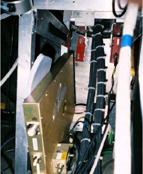
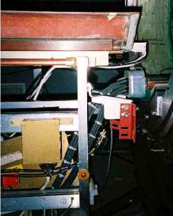

Correct Cable Dressings and Ty-Wraps
Check that the cables are routed, dressed and tied together as shown in the photographs.
Note: the gradient cables are routed on TOP of the bar at the back of the patient table.
Cable routing above This bar

